Table of Contents
Arduino: MKR NB-1500 to Google Cloud IoT
For this project, we will take different values from the Arduino board and publish them in Google Cloud.

Getting started with the MKR NB-1500
What will you learn
- Control Arduino board MKR NB-1500 using the Arduino IDE
- Register a device on Google Cloud
- Generate credentials for devices
- Build a bridge between UDP and Google Cloud
What will you need?
- Finish successfully the Arduino Starterkit tutorial
- Arduino board MKR NB-1500
- Micro USB cable
- Arduino IDE
- GCP account
- KITE Platform Certificates files
- Telefónica SIMs with private APN (IPsec)
- Telefónica data Bridge
If you have successfully completed the Arduino Starterkit tutorial, all the necessary software is already updated.

What is MQTT
MQTT is a machine-to-machine (M2M)/”Internet of Things” connectivity protocol. It was designed as an extremely lightweight publish/subscribe messaging transport.
The first concept is the publish and subscribe system. A device can publish a message on a topic, or it can be subscribed to a topic to receive messages
Google Cloud use this system to communicate with your devices,
For each device, google allow you to subscribe to the config and command topic to receive information.
/devices/<device_name>/config
/devices/<device_name>/command/#
And publish in a topic to report the device state
/devices/<device_name>/state

Generate your devices keys
To secure your devices, it is necessary to create a key pair (public/private) with which to validate any connection.
The easiest way is to use openssl command in a unix console.
the following example shows the commands with which to generate an RSA-256 private key with a 2048-bit key size.
openssl genrsa -out GCP_rsa_private.pem 2048
openssl rsa -in GCP_rsa_private.pem -pubout -out GCP_rsa_public.pem
once you’ve executed the commands, you should have the following files:
- GCP_rsa_private.pem: The private key that must be securely stored on the device and used to sign the authentication.
- GCP_rsa_public.pem: The public key that must be stored in Cloud IoT Core and used to verify the signature of the authentication.
Remember to keep them well, the safety of your devices depends on it.
you need add the public key on the cloud and the private key in your device, but if you decide to use our Data Bridge, you can only store it on the server.

How to communicate with Google Cloud
To manage your IoT devices you must access the IoT Core of your project.
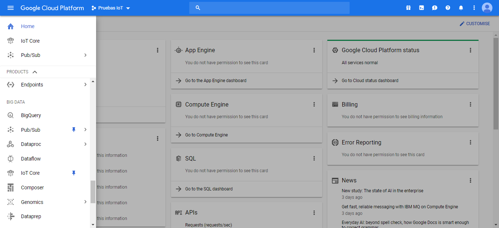
At a first glance you will be able to identify all your registries and create new ones if you need to. These records organize and classify your devices within the cloud, so you must have at least one created. But don’t worry, later you will see how they can be created automatically using the data Bridge connection.
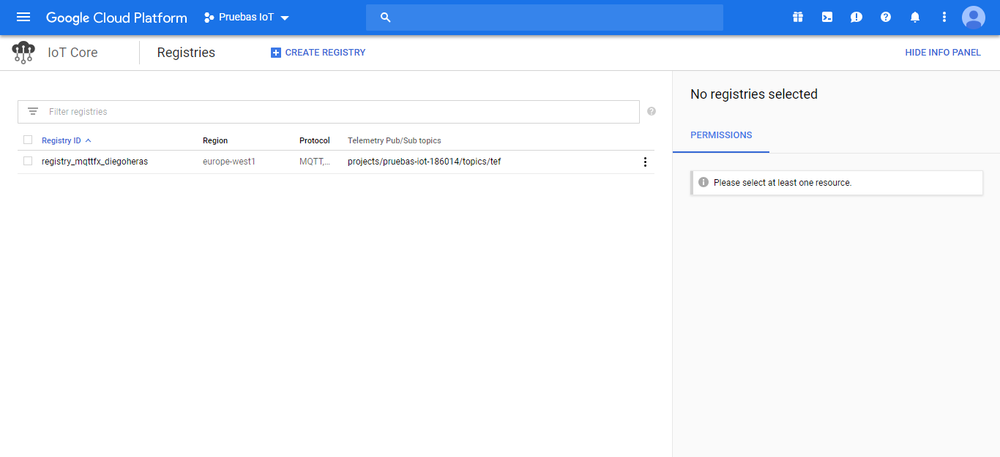
In the same way by accessing each registry, you can see the list of all the devices it contains. but in the same way accessing the Kite information will be able to create new devices automatically to detect new connections
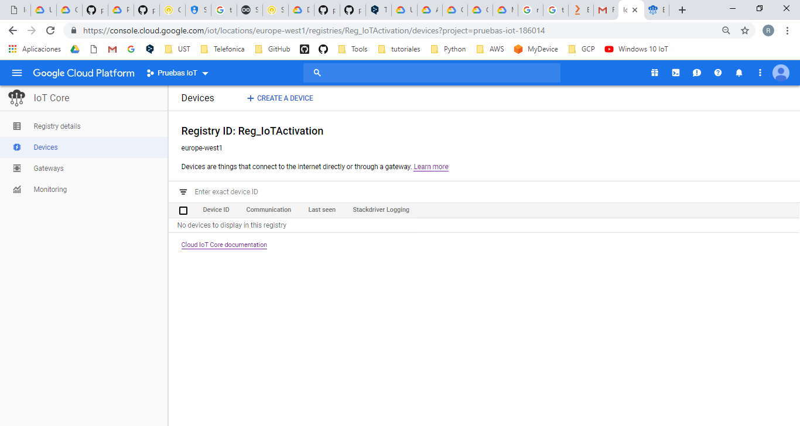
You can access into a device for check the state and update the configuration, in some cases, it is possible to send commands to the device as long as it is subscribed to the corresponding topic.
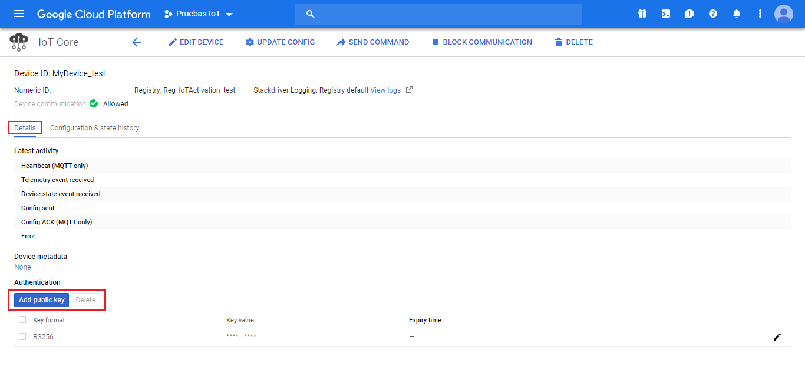
In order to guarantee the security, you will have to associate the public keys created in the previous section.
check history
Google Cloud allows you to review up to a historical 10 previous states
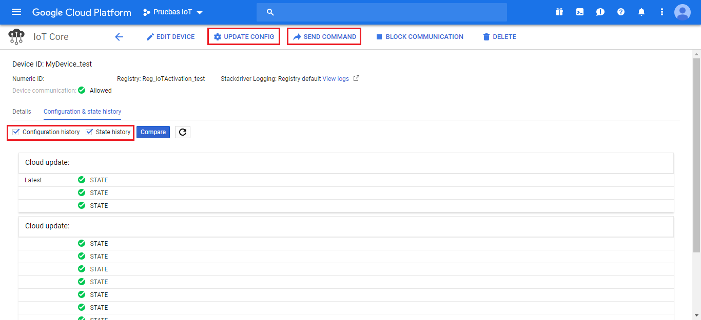
update state
To publish in the device you will only have to publish in his corresponding topic. Do not forget that you must connect using the private key associated with the key of each device.
/devices/<device_name>/state
update config
Click on the button update configuration to store a configuration, each time the device is subscribed to the topic will receive as a message the latest version of the configuration.
/devices/<device_name>/config
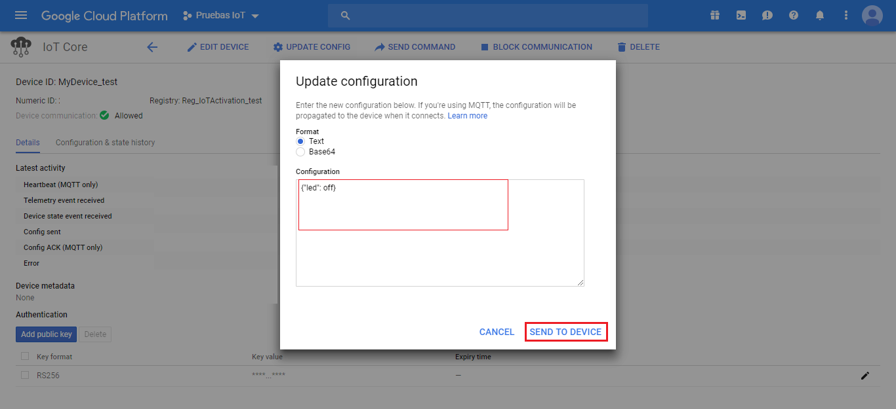
send command
Click on the button send command to store a configuration, If the device is subscribed to the correct topic, it will receive as a message the sent command
/devices/<device_name>/command/#
but for this project we will use the configuration to send any command to the device.


Test your Certificates with MQTT.fx
One of the best ways to make sure that certificates have been created correctly is to try connecting via a MQTT client with graphical interface.
We recommend you download MQTT.fx from the following link https://mqttfx.jensd.de/
- Open MQTT.fx and create a new connection.

- Configure the connection as shown in the image below. Previously you need to have created a project and the respective registry and device, since unlike other clouds for the google connection you will need to indicate these parameters instead of the broker.
Host name: mqtt.googleapis.com

note that you will need to convert the pem file format. Use the command line
openssl pkcs8 -topk8 -inform PEM -outform DER -in GCP_rsa_private.pem -out GCP_rsa_private.pkcs8 -nocrypt
-
Now that you are connected to the broker, but you will have a series of restrictions to subscribe only to the default topics of the device.
-
Publish a new state in the topic
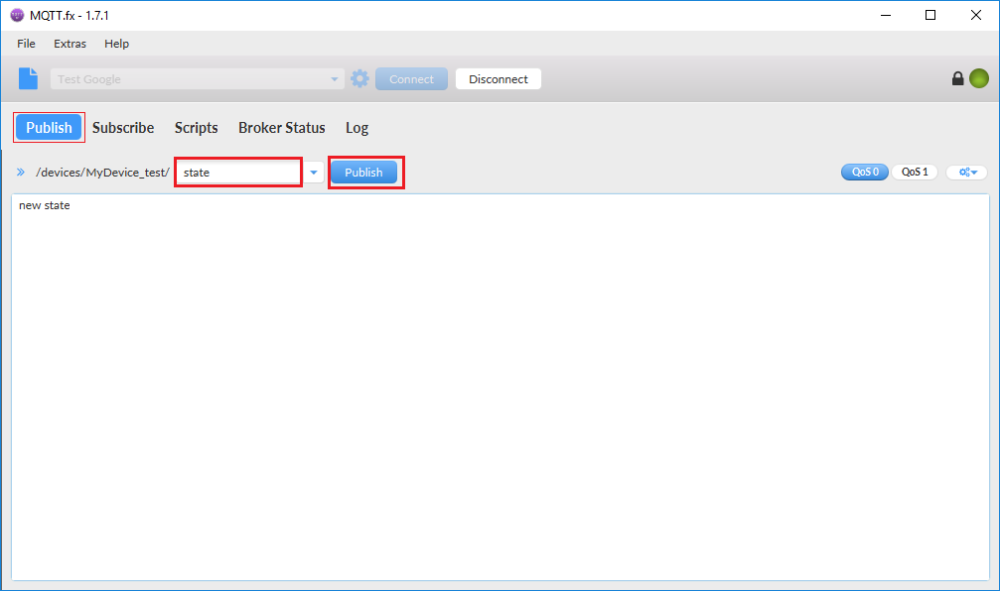
- Subscribe to Config and command topic

How to Start with the project
We will explain it to you later in detail how to play with it step by step, In this tutorial you need to be familiar with the following concepts
- Run a code file on your Arduino Board
- Run a python server
- Upload the credentials files to a Server
- Update a configuration in IoT core console
- Get the status from IoT core
Now you can connect to the internet and send your data through the UDP protocol.

Arduino Board: Run a code file
For this Arduino project, it is necessary that you include some of the classes we have prepared exclusively for this tutorial. To do this, be sure to open the .ino file from the following folder. There are all the files you need.
In the following code you can see the main structure of the program:
- Measuring
- Modem connection to the network
- Sending of the measures
- Disconnection of the modem to reduce power consumption
- Sampling timeout ```c }
void loop() { // put your main code here, to run repeatedly:
Serial.println(“measuring…”); data.measurement(); Serial.print(“- voltage: “); Serial.println(data.get_voltage()); Serial.print(“- amperage: “); Serial.println(data.get_amperage());
Serial.println(“Sending… “); nbAccess.noLowPowerMode(); send_data_UDP(data.get_voltage(), data.get_amperage()); nbAccess.lowPowerMode();
delay(polling); }
But first of all, don't forget to complete the configuration
[file](https://github.com/telefonicaid/iot-activation/blob/master/scripts/Arduino/Connection_UDP_command/configuration.h)
In the you have to complete the necessary information to complete the sending of information to the UDP server.
```c
// COMPLETE your information
#define SECRET_PINNUMBER ""
#define LOCAL_PORT 4114
#define IP_ADDRESS "XX.XX.XX.XX"
// SET your sampling time
#define POLL_TIME 10

UDP data Bridge: Connecting using NB-IoT o LTE-M
One of the advantages of an iot device, is to be able to stop the connection when it is not necessary to decrease the energy consumption.
From iot-activation we suggest you the deployment of a data bridge between the Arduino and the Google Cloud IoT Core.
This allows you to increase the intelligence of your devices by integrating the Kite Platform into this server, and this add extra security in sending data over the network. By updating your Kite SIM information, the data bridge recognizes the SIM and automatically connects to Google Cloud IoT core.
Just make sure to add the name of the thing as one of the fields of the SIM in Kite. Kite
This bridge is the easiest way to connect to Google Cloud using only one UDP send
:heavy_exclamation_mark: If you’re running the connection tests in The Thinx lab. The SIM you use will not have connectivity with the Kite platform. So you will not be able to use the connection through our Bridge. Even so you have access to the internet and you will be able to perform any test on your infrastructure.
logger.info("################################# waiting for a new message #################################")
udp_msg, udp_ip = sock.recvfrom(1024)
ip = udp_ip[0]
logger.info("Message Received [ %s ] from [ %s ] : [ %s ]" % (udp_msg, udp_ip[0],udp_ip[1] ))
response = bridge_routine(udp_msg, udp_ip[0], config_cloud)
logger.debug("Generate ACK payload [ %s ]" % response)
ack_msg = json.dumps(response)
logger.info("Sent MESSAGE [ %s ] to [ %s ] : [ %s ]" % (ack_msg, udp_ip[0], udp_ip[1]))
sock.sendto(ack_msg, udp_ip)

Check the events
With this script you can send voltage and current values that you will can saw
In order to do this, it is necessary to create a subscription on the topic associated to each registry.
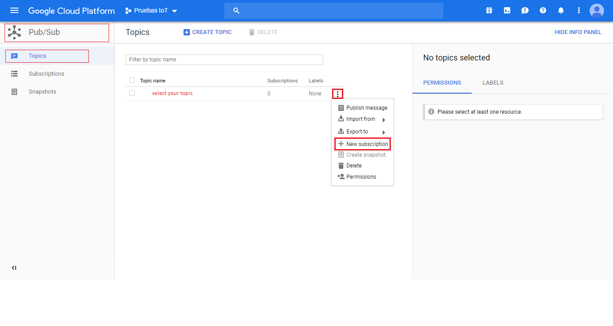
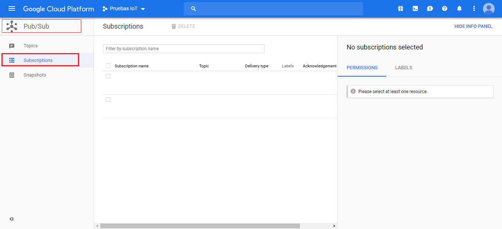
Open a google cloud terminal and run the following command to check
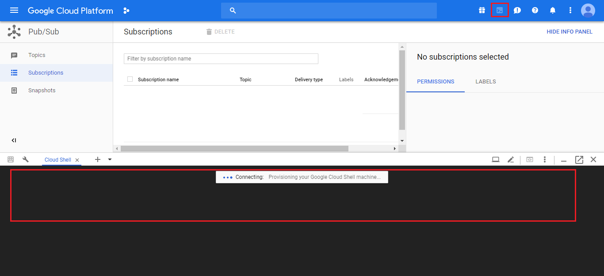
gcloud pubsub subscriptions pull projects/<project_id>/subscriptions/<subscriptions_name> --auto-ack --limit=100
Before starting the execution you will see how his events are empty, and then the shipments of the registry devices will appear continuously.

Send configuration
To comunicate with the device you must use the configuration as explained in the previous section. You can change this instruction as many times as needed.
In this example you can turn off and endend the small LED on the board, but you are unrestricted to program your own instructions. Feel free!
# Turn on led
{
1
}
# Turn off led
{
2
}
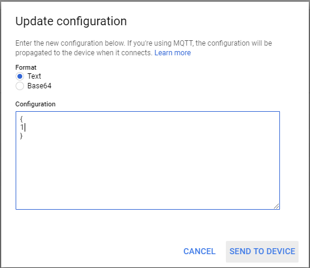